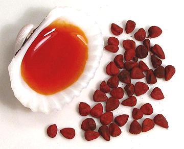

Achiote / Annatto

[Aploppas; Achiotl (Nahuatl); Bijol; Bija (Caribbean); Recado Rojo
(Mexico); Atsuete (Philippines); pimentão doce (Spanish);
Bixa orellana of family Bixaceae]
Seeds of he Achiote shrub, probably native to Brazil, have a pleasant
but subtle aroma and flavor, but it is for their color they are most widely
used. Aside from ethnic cuisines, the intense red-orange pigment, annatto
(E160b), is used to color cheddar cheese, margarine, smoked fish, custard
powder and other foods. It includes two pigments, one oil soluble
which is more red, and one water soluble which is more yellow. The photo
shows seeds (about 0.2 inch long) and oil extracted color.
The seeds are used in cooking in the Philippines, Mexico, Central
America, the Caribbean and northeastern parts of South America. Seeds,
Leaves and other parts are used medicinally for a number of conditions.
Sap from the (inedible) fruits is used to treat type 2 diabetes and fungal
infections. The red pigment has long been used by tropical American Indians
as body paint and hair dye.
More on Mallows
Both color and flavor are used in the cuisines of the Philippines,
Caribbean, Mexico, Central America and northeastern parts of South America.
It is also used to some extent in India and Southeast Asia. Three forms
are used: oil extracted color, water extracted color and ground seeds.
Buying & Storing:
The whole seeds are sold in plastic
packets in the spice section of markets serving communities as listed
above. In a sealed jar, stored in a cool place away from light, the seeds
will last up to a year. They slowly lose their red color and should be
discarded when noticeably faded to brown.
Annatto Oil:
In a pan place 1 part Annatto seeds and 2
parts Oil. Pure and pomace olive oil (not virgin) work well and are
stable. Heat the oil carefully and stir continuously until the desired
color has been reached. Be careful not get it too hot or both color and
flavor will be destroyed. Strain and store in a tightly sealed jar where
it will have about the same shelf life as the type of oil used.
Annatto Water:
In a mortar, place 1 part Annatto
Seeds and 2 parts Water. Let soak 20 minutes. Crush the seeds to release
more color and let soak another 10 minutes. Strain out the seeds and
discard them.
Atsuete:
This is simply seeds ground to a powder. In the
Philippines recipes often call for "1 atsuete", meaning one packet. A
packet contains 10 grams / 1/3 ounce, the weight of 1 level tablespoon of
seeds. Just put a tablespoon of seeds in your spice grinder and reduce to
powder.
sp_annattz 090522 - www.clovegarden.com
© 2009 Andrew Grygus - agryg@clovegarden.com -
Photos on this page not otherwise credited are ©
cg1 - Linking to and non-commercial
use of this page permitted